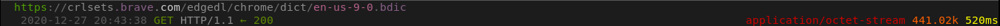

Brave
Brave Browser is a Chromium fork with many interesting features not found elsewhere, such as built-in Adblock and other extensions, fingerprinting protection, a cleaner Preferences menu compared to other Chrome forks, and the (opt-in) ability to automatically support (pay) the websites you visit. The developers describe it as "A browser with your interests at heart."[1] with the built-in privacy protections.
Spyware Level: High
Brave is self updating software, uses Google as the default search engine, has built-in telemetry, and even has an opt-out rss-like news feed similar to Firefox Pocket. These shouldn't be the things that come to mind if someone were to imagine a privacy oriented browser.
Auto-updates
Brave will check for updates every time you run it, and you can't turn it off from the browser. Athough, it's on Brave's low priority list to add an option to do so.[2] The reason why it's low priority would be because it's been over a year and there hasn't been an implementation of it yet.
Brave has built-in telemetry
While running, Brave will make lots of requests to the domain p3a.brave.com as telemetry. They claim they store the collected data for several days.[8] This feature is an opt-out that can be disabled. This opt-out can be disabled here.
Brave Today
Brave now has new feature similar to Firefox Pocket called Brave Today. If you don't know what Firefox Pocket is, it's basically an rss-like news feed that's shown in every blank tab. This feature Brave has is sadly an opt-out rather than an opt-in and sends lots of requests to Brave's servers. It can't seem to be disabled it in and of itself, but setting the tabs to blank seems to stop the requests.
SafeBrowsing
Brave uses SafeBrowsing. It's a feature that tries to "protect" the user from potentially unsafe websites and extensions. However, it sends requests to fetch the information required. Brave's SafeBrowsing is powered by google.[10] This opt-out can be disabled here.
Brave Rewards
Brave has a rewards program. You can find more information about it here.[3] At first glance it looks like the rewards program is an opt-in, but the browser makes requests to these domains regardless if you sign up or not:
rewards.brave.com
api.rewards.brave.com
grant.rewards.brave.com
A quick update: These requests have been reported as a bug and for the most part have been fixed (with a couple exceptions). I'll remove this section once the bug has been completely fixed.[12]
Miscellaneous requests worth noting
Brave on first run sends a request to fetch the library used for checking spelling errors:
Brave on startup sends a request to variations.brave.com. Brave uses this to turn on and off features. There isn't a way to disable this as of yet.[11]
Brave fetches the list of affiliates through laptop-updates.brave.com:
Brave makes a request to static1.brave.com every once and a while, which looks like it's used to fetch plugin information?[4] When the url was placed into the browser, it was directed to Google's error 404 page.[9]

A quick curl --head static1.brave.com shows that Brave uses Google's gstatic, which uses Cloudflare as well:
On the first run, Brave fetches five extensions from brave-core-ext.s3.brave.com and tries to install them:
Not spyware related, but worth noting
Anti-privacy search engine by default
Google is the default search engine of Brave. For a browser that claims to be privacy oriented, this is a red flag. They at least make it easy for you to change the default search engine on the first run.
Sources
1. Brave's website [web.archive.org] [archive.is] [ghostarchive.org]
2. Add a disable autoupdate feature [web.archive.org] [archive.is] [ghostarchive.org]
3. Brave Rewards Program [web.archive.org] [archive.is] [ghostarchive.org]
4. Plugin Information? [web.archive.org] [ghostarchive.org]
5. Facebook, Twitter Trackers Whitelisted by Brave Browser [web.archive.org] [ghostarchive.org]
6. Brave Browser Features [web.archive.org] [archive.is] [ghostarchive.org]
7. Script Blocking Exceptions Update [web.archive.org] [ghostarchive.org]
8. Brave's Analytics [web.archive.org] [ghostarchive.org]
9. Brave's static site [archive.is] [archive.org]
10. Brave's Deviations from Chromium [web.archive.org] [ghostarchive.org]
11. Allow to opt-out of Griffin variations [web.archive.org] [ghostarchive.org]
12. Only make requests to *.rewards.brave.com... [web.archive.org] [ghostarchive.org]
This article was created on 5/7/2018
This article was last edited on 8/17/2021
If you want to contribute to this website, you can always make a pull request.
All contributions must be licensed under the CC0 license to be accepted.